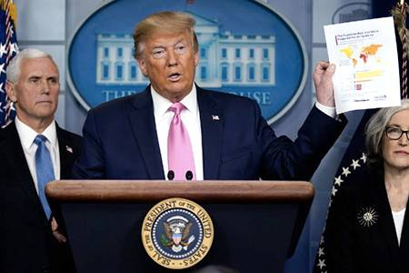

A total of 188 countries and territories have had at least one case of COVID-19 so far. Due to the pandemic in Europe, many countries in the Schengen Area have restricted free movement and set up border controls. National reactions have included containment measures such as quarantines and curfews (known as stay-at-home orders, shelter-in-place orders, or lockdowns). By 26 March, 1.7 billion people worldwide were under some form of lockdown, which increased to 3.9 billion people by the first week of April—more than half the world's population. By late April, around 300 million people were under lockdown in nations of Europe, including but not limited to Italy, Spain, France, and the United Kingdom, while around 200 million people were under lockdown in Latin America.Nearly 300 million people, or about 90 percent of the population, were under some form of lockdown in the United States,[530] around 100 million people in the Philippines,about 59 million people in South Africa, and 1.3 billion people have been under lockdown in India.On 21 May 100,000 new infections occurred worldwide, the most since the start of the pandemic, while overall 5 million cases were surpassed.
As of 19 May 2020, cases have been reported in all Asian countries except for Turkmenistan and North Korea, although these countries likely also have cases. Despite being the first area of the world hit by the outbreak, the early wide-scale response of some Asian states, particularly South Korea,Taiwan, and Vietnam,has allowed them to fare comparatively well.
The first confirmed case of COVID-19 has been traced back to 1 December 2019 in Wuhan; one unconfirmed report suggests the earliest case was on 17 November. Doctor Zhang Jixian observed a cluster of pneumonia cases of unknown cause on 26 December, upon which her hospital informed Wuhan Jianghan CDC on 27 December. Initial genetic testing of patient samples on 27 December 2019 indicated the presence of a SARS-like coronavirus. A public notice was released by Wuhan Municipal Health Commission on 31 December, confirming 27 cases and suggesting wearing face masks.The WHO was informed on the same day.As these notifications occurred, doctors in Wuhan were warned by police for "spreading rumours" about the outbreak. The Chinese National Health Commission initially said there was no "clear evidence" of human-to-human transmission.In a 14 January conference call, Chinese officials said privately that human-to-human transmission was a possibility, and pandemic preparations were needed.[544] In a briefing posted during the night of 14–15 January, the Wuhan Municipal Health Commission said the possibility of limited human-to-human transmission could not be ruled out.
Iran reported its first confirmed cases of SARS‑CoV‑2 infections on 19 February in Qom, where, according to the Ministry of Health and Medical Education, two people had died that day.Early measures announced by the government included the cancellation of concerts and other cultural events, sporting events, Friday prayers, and closures of universities, higher education institutions, and schools. Iran allocated 5 trillion rials (equivalent to US$120,000,000) to combat the virus. President Hassan Rouhani said on 26 February there were no plans to quarantine areas affected by the outbreak, and only individuals would be quarantined.Plans to limit travel between cities were announced in March,although heavy traffic between cities ahead of the Persian New Year Nowruz continued. Shia shrines in Qom remained open to pilgrims until 16 March. Iran became a centre of the spread of the virus after China during February.More than ten countries had traced their cases back to Iran by 28 February, indicating the outbreak may have been more severe than the 388 cases reported by the Iranian government by that date. The Iranian Parliament was shut down, with 23 of its 290 members reported to have had tested positive for the virus on 3 March.On 15 March, the Iranian government reported a hundred deaths in a single day, the most recorded in the country since the outbreak began.At least twelve sitting or former Iranian politicians and government officials had died from the disease by 17 March.By 23 March, Iran was experiencing fifty new cases every hour and one new death every ten minutes due to coronavirus. According to a WHO official, there may be five times more cases in Iran than what is being reported. It is also suggested that U.S. sanctions on Iran may be affecting the country's financial ability to respond to the viral outbreak. The UN High Commissioner for Human Rights has demanded economic sanctions to be eased for nations most affected by the pandemic, including Iran. On 20 April it was reported that Iran had reopened shopping malls and other shopping areas across the country, though there is a fear of the second wave of infection due to this move.In March, and again in April, there were reports that Iran was under-reporting COVID-19 cases and deaths.After reaching a low in new cases in early May, a new peak was reported on 4 June, raising fear of a second wave.
COVID-19 was confirmed to have spread to South Korea on 20 January 2020 from China. The nation's health agency reported a significant increase in confirmed cases on 20 February, largely attributed to a gathering in Daegu of the Shincheonji Church of Jesus. Shincheonji devotees visiting Daegu from Wuhan were suspected to be the origin of the outbreak.By 22 February, among 9,336 followers of the church, 1,261 or about 13 percent reported symptoms.
South Korea declared the highest level of alert on 23 February 2020. On 28 February, more than 2,000 confirmed cases were reported, rising to 3,150 on 29 February.All South Korean military bases were quarantined after tests showed three soldiers had the virus.Airline schedules were also changed.
South Korea introduced what was considered the largest and best-organised programme in the world to screen the population for the virus, isolate any infected people, and trace and quarantine those who contacted them.Screening methods included mandatory self-reporting of symptoms by new international arrivals through mobile application, drive-through testing for the virus with the results available the next day, and increasing testing capability to allow up to 20,000 people to be tested every day South Korea's programme is considered a success in controlling the outbreak without quarantining entire cities.
South Korean society was initially polarised on President Moon Jae-in's response to the crisis, many signing petitions either praising it or calling for impeachment.On 23 March, it was reported that South Korea had the lowest one-day case total in four weeks. On 29 March it was reported that beginning 1 April all new overseas arrivals will be quarantined for two weeks. Per media reports on 1 April, South Korea has received requests for virus testing assistance from 121 different countries. On 15 May it was reported that about two thousand businesses were told to close again when a cluster of a hundred infected individuals was discovered; contact tracing is being done on 11,000 people.
As of 13 March 2020, when the number of new cases became greater than those in China, the World Health Organization (WHO) began to consider Europe the active centre of the pandemic.Cases by country across Europe had doubled over periods of typically 3 to 4 days, with some countries (mostly those at earlier stages of detection) showing doubling every 2 days.
As of 17 March, all countries within Europe had a confirmed case of COVID-19, with Montenegro being the last European country to report at least one case. At least one death has been reported in all European countries, apart from the Vatican City.
As of 18 March, more than 250 million people were in lockdown in Europe.
As of 24 May, 68 days since its first recorded case, Montenegro became the first COVID-19-free country in Europe.
Serology studies show that around 5% of population has been infected in France, Spain and the UK. In those countries, about 1 out of ten has been detected as a confirmed case, and 1% has died.
The outbreak was confirmed to have spread to Italy on 31 January, when two Chinese tourists tested positive for SARS‑CoV‑2 in Rome. Cases began to rise sharply, which prompted the Italian government to suspend all flights to and from China and declare a state of emergency. An unassociated cluster of COVID-19 cases was later detected, starting with 16 confirmed cases in Lombardy on 21 February.
On 22 February, the Council of Ministers announced a new decree-law to contain the outbreak, including quarantining more than 50,000 people from eleven different municipalities in northern Italy.Prime Minister Giuseppe Conte said, "In the outbreak areas, entry and exit will not be provided. Suspension of work activities and sports events has already been ordered in those areas."
On 4 March, the Italian government ordered the full closure of all schools and universities nationwide as Italy reached a hundred deaths. All major sporting events were to be held behind closed doors until April,but on 9 March all sport was suspended completely for at least one month. On 11 March, Prime Minister Conte ordered stoppage of nearly all commercial activity except supermarkets and pharmacies.
As of 6 June 2020, there have been 241,310 confirmed cases and 27,135 deaths. The actual number of cases was considered to be much higher, as many people with only mild or no symptoms were unlikely to have been tested.On 4 June, the results of the second wave of a Spanish Government nation-wide seroprevalence study showed that the percentage of population which could have been infected during the pandemic would be around 5,2%, approximately 2 million people, a figure ten times higher than the number of confirmed cases on that date. According to this study based on sample of more than 63,000 people, Madrid and several provinces of Castilla–La Mancha and Castilla y León would be the most affected areas with a percentage of infection greater than 10%.The number of deaths is also believed to be an underestimate due to lack of testing and reporting, perhaps by as much as 15,993 according to the Spanish Ministy of Health monitoring system on daily excess mortality (Sistema de Monitorización de la Mortalidad Diaria - MoMo)
Prior to 18 March 2020, the British government did not impose any form of social distancing or mass quarantine measures on its citizens. As a result, the government received criticism for the perceived lack of pace and intensity in its response to concerns faced by the public. On 16 March, Prime Minister Boris Johnson made an announcement advising against all non-essential travel and social contact, suggesting people work from home where possible and avoid venues such as pubs, restaurants, and theatres.On 20 March, the government announced that all leisure establishments such as pubs and gyms were to close as soon as possible,and promised to pay up to 80 percent of workers' wages to a limit of £2,500 per month to prevent unemployment during the crisis. On 23 March, the prime minister announced tougher social distancing measures, banning gatherings of more than two people and restricting travel and outdoor activity to that deemed strictly necessary. Unlike previous measures, these restrictions were enforceable by police through the issuing of fines and the dispersal of gatherings. Most businesses were ordered to close, with exceptions for businesses deemed "essential", including supermarkets, pharmacies, banks, hardware shops, petrol stations, and garages. On 24 April it was reported that one of the more promising vaccine trials had begun in England; the government has pledged, in total, more than 50 million pounds towards research.
To ensure the UK health services had sufficient capacity to treat people with COVID-19, a number of temporary critical care hospitals were built. The first to be operational was the 4000-bed capacity NHS Nightingale Hospital London, constructed within the ExCeL convention centre over nine daysOn 4 May, it was announced that the Nightingale Hospital in London would be placed on standby and remaining patients transferred to other facilities.This followed reports that NHS Nightingale in London "treated 51 patients" within the first three weeks of opening.On 5 May, official figures revealed that Britain had the worst COVID-19 death toll in Europe, prompting calls for an inquiry into the handling of the pandemic. The death toll in the United Kingdom was nearly 29,427 for those tested positive for the virus. Later, it was calculated at 32,313, after taking the official death count for Scotland and Northern Ireland into account.On 16 April it was reported that the UK would have first access to the Oxford vaccine, due to a prior contract; should the trial be successful, some 30 million doses in the UK would be available.
Although it was originally thought the pandemic reached France on 24 January 2020, when the first COVID-19 case in Europe was confirmed in Bordeaux, it was later discovered that a person near Paris had tested positive for the virus on 27 December 2019 after retesting old samples.A key event in the spread of the disease in the country was the annual assembly of the Christian Open Door Church between 17 and 24 February in Mulhouse, which was attended by about 2,500 people, at least half of whom are believed to have contracted the virus. On 13 March, Prime Minister Édouard Philippe ordered the closure of all non-essential public places, and on 16 March, French President Emmanuel Macron announced mandatory home confinement, a policy which was extended at least until 11 May.As of 23 April, France has reported more than 120,804 confirmed cases, 21,856 deaths, and 42,088 recoveries, ranking fourth in number of confirmed cases.In April, there were riots in some Paris suburbs.On 18 April it was reported that schools in France had to close again after reopening, due to COVID-19 case flare-ups.
Sweden differed from most other European countries in that it mostly remained open. Per the Swedish Constitution, the Public Health Agency of Sweden has autonomy which prevents political interference and the agency's policy favored forgoing a lockdown in an attempt to reach herd immunity. The New York Times said that, as of May 2020, the outbreak had been far deadlier there but the economic impact had been reduced as Swedes have continued to go to work, restaurants, and shopping.On 19 May, it was reported that the country had in the week of 12–19 May the highest per capita deaths in Europe, 6.25 deaths per million per day.
The first cases in North America were reported in the United States in January 2020. Cases were reported in all North American countries after Saint Kitts and Nevis confirmed a case on 25 March, and in all North American territories after Bonaire confirmed a case on 16 April. On 26 March 2020, the U.S. became the country with the highest number of confirmed COVID-19 infections, with over 82,000 cases.On 11 April 2020, the U.S. became the country with the highest official death toll for COVID-19, with over 20,000 deaths.As of 15 May 2020 the total cases of COVID-19 were 1,571,908 with 95,764 total deaths. Canada reported 60,616 cases and 3,842 deaths on 4 May,while Mexico reported 23,471 cases and 2,154 deaths. The Dominican Republic, Haiti and Cuba are the only Caribbean countries reporting more than 1,000 cases (16,908, 2,507 and 2,092 respectively), while Panama and Honduras led Central America with 14,095 and 5,527 cases, respectively.
On 20 January 2020, the first known case of COVID-19 was confirmed in the Pacific Northwest state of Washington in a man who had returned from Wuhan on 15 January. On 31 January, the Trump administration declared a public health emergency,and restricted entry for travellers from China who were not U.S. citizens.
On 28 January, the Centers for Disease Control and Prevention (CDC) announced they had developed their own testing kit Despite this, the United States had a slow start in testing, which obscured the extent of the outbreak.[Testing was marred by defective test kits produced by the government in February, a lack of federal approval for non-government test kits, and restrictive criteria for people to qualify for a test.
By 2 March there were 80 confirmed cases, with half of the cases in California. Florida and New York had declared their first two cases and the state of Washington reported many suspected cases and the first death. Vice President Pence maintained that the threat of the virus spreading throughout the U.S. was small.
The White House has been criticised for downplaying the threat and controlling the messaging by directing health officials and scientists to coordinate public statements and publications related to the virus with the office of Vice-President Mike Pence. On 14 April, President Trump halted funding to the World Health Organization (WHO), saying they had mismanaged the pandemic. He also said the U.S. would not participate in a global effort with the WHO to develop a vaccine and drugs to combat the virus. On 1 May the CDC presented a 17-page report titled "Guidance for Implementing the Opening Up America Again Framework" to the administration. It had been written to provide advice for faith leaders, places of business, and other public places, educators, and state and local officials as they began to reopen. The White House refused to use the report. Trump said he felt the guidelines were too restrictive, commenting "I see the new normal being what it was three months ago. I think we want to go back to where it was." By mid-May reports of new cases began to level off and most states began to open restaurants and other places of business, placing limits to the numbers of people allowed in the establishment at the same time. The head of the NIAID, Anthony Fauci, warned that if caution was not used the rate of infections could rebound and he was particularly concerned about opening the schools in the fall. President Trump expressed surprise and disapproval at Fauci's statements saying, "To me it's not an acceptable answer, especially when it comes to schools."Starting in late May, large-scale protests against police brutality in at least 200 U.S. cities in response to the death of George Floyd raised concerns of a resurgence of the virus due to the close proximity of protesters.
The pandemic was confirmed to have reached South America on 26 February when Brazil confirmed a case in São Paulo.By 3 April, all countries and territories in South America had recorded at least one case.
On April 17, the highest number of cases and deaths was registered in Brazil, followed by Peru and Chile in the number of confirmed cases.
On May 13, it was reported that Latin America and the Caribbean had reported over 400,000 cases of infection with 23,091 deaths. On May 22, citing especially the rapid increase of infections in Brazil, the WHO declared that South America is presently the epicenter of the coronavirus pandemic.As of 25 May, the area had more than 636,000 confirmed cases and more than 31,000 deaths. However, due to a dearth of testing and medical facilities it is believed that the outbreak is far larger than the official numbers show.
On 20 May it was reported that Brazil had a record 1,179 deaths in a single day, for a total of almost 18,000 fatalities. With a total number of almost 272,000 cases, Brazil became the country with the third-highest number of cases, following Russia and the United States.On 25 May, Brazil exceeded the number of reported cases in Russia when they reported that 11,687 new cases had been confirmed over the previous 24 hours, bringing the total number to over 374,800, with more than 23,400 deaths. President Jair Bolsonaro has created a great deal of controversy referring to the virus as a "little flu" and frequently speaking out against preventive measures such as lockdowns and quarantines. His attitude towards the outbreak has so closely matched that of U.S. president Donald Trump he has been called the "Trump of the Tropics".
According to Michael Yao, WHO's head of emergency operations in Africa, early detection is vital because the continent's health systems "are already overwhelmed by many ongoing disease outbreaks".Advisers say that a strategy based on testing could allow African countries to minimise lockdowns that inflict enormous hardship on those who depend on income earned day by day to be able to feed themselves and their families. Even in the best scenario, the United Nations says 74 million test kits and 30,000 ventilators will be needed by the continent's 1.3 billion people in 2020.Most of the reported cases are from six countries: South Africa, Nigeria, Ghana, Morocco, Egypt and Algeria, but it is believed that there is widespread under-reporting in other African countries with poorer health care systems.Cases have been confirmed in all African countries, with Lesotho the last country to report its first coronavirus case on 13 May 2020.There have been no reported cases in the British Overseas Territory of Saint Helena, Ascension and Tristan da Cunha.